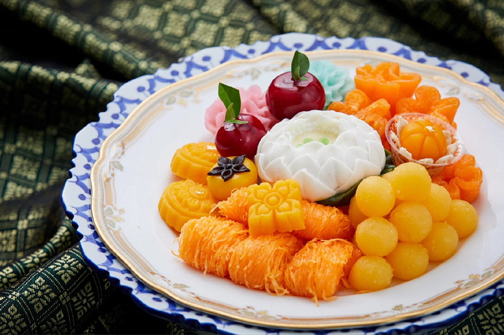
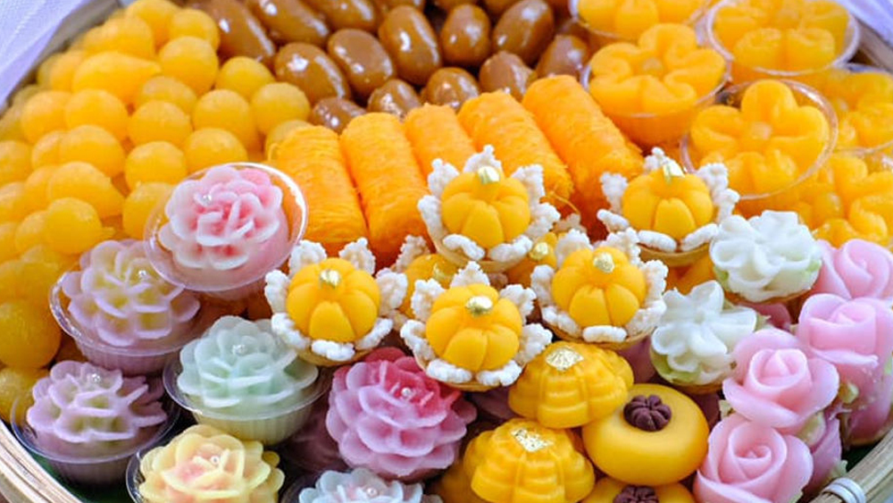

ประวัติขนมไทย
ในสมัยโบราณคนไทยจะทำขนมเฉพาะวาระสำคัญเท่านั้น เป็นต้นว่างานทำบุญ งานแต่ง เทศกาลสำคัญ หรือต้อนรับแขกสำคัญ
เพราะขนมบางชนิดจำเป็นต้องใช้กำลังคนอาศัยเวลาในการทำพอสมควร
ส่วนใหญ่เป็น ขนบประเพณี เป็นต้นว่า ขนมงานเนื่องในงานแต่งงาน ขนมพื้นบ้าน เช่น ขนมครก ขนมถ้วย ฯลฯ
ส่วนขนมในรั้วในวังจะมีหน้าตาสวยงาม ประณีตวิจิตรบรรจงในการจัดวางรูปทรงขนมสวยงาม
ขนมไทยดั้งเดิม มีส่วนผสมคือ แป้ง น้ำตาล กะทิ เท่านั้น ส่วนขนมที่ใช้ไข่เป็นส่วนประกอบ เช่น ทองหยิบ ทองหยอด
เม็ดขนุน นั้น มารี กีมาร์ เดอ ปีนา (ท้าวทองกีบม้า) หญิงสาวชาวโปรตุเกส เป็นผู้นำสูตรมาจากโปรตุเกส
คำให้การขุนหลวงหาวัด บันทึกไว้ว่าที่เกาะเมืองอยุธยามีย่านร้านขายอาหารหลากหลาย รวมถึงร้านขายขนมต่าง ๆ เช่น
ขนมกงเกวียน ขนมพิมถั่ว ขนมชะมด สัมปันนี ขนมเปีย (ขนมเปี๊ยะ) และหินฝนทอง[1]
ในสมัยรัชกาลที่ 1 มีการพิมพ์ตำราอาหารออกเผยแพร่ รวมถึงตำราขนมไทยด้วย
จึงนับได้ว่าวัฒนธรรมขนมไทยมีการบันทึกเป็นลายลักษณ์อักษรครั้งแรก ตำราอาหารไทยเล่มแรกคือแม่ครัวหัวป่าก์
การแบ่งประเภทของขนมไทย
แบ่งตามวิธีการทำให้สุกได้ดังนี้
ขนมที่ทำให้สุกด้วยการกวน ส่วนมากใช้กระทะทอง กวนตั้งแต่เป็นน้ำเหลวใสจนงวด
แล้วเทใส่พิมพ์หรือถาดเมื่อเย็นจึงตัดเป็นชิ้น เช่น ตะโก้ ขนมลืมกลืน ขนมเปียกปูน ขนมศิลาอ่อน
และผลไม้กวนต่าง ๆ รวมถึงข้าวเหนียวแดง ข้าวเหนียวแก้ว และกะละแม
ขนมที่ทำให้สุกด้วยการนึ่ง ใช้ลังถึง บางชนิดเทส่วนผสมใส่ถ้วยตะไลแล้วนึ่ง บางชนิดใส่ถาดหรือพิมพ์
บางชนิดห่อด้วยใบตองหรือใบมะพร้าว
เช่น ช่อม่วง ขนมชั้น ข้าวต้มผัด สาลี่อ่อน สังขยา ขนมกล้วย ขนมตาล ขนมใส่ไส้ ขนมเทียน ขนมน้ำดอกไม้
ข้าวเกรียบปากหม้อ
ขนมที่ทำให้สุกด้วยการเชื่อม เป็นการใส่ส่วนผสมลงในน้ำเชื่อมที่กำลังเดือดจนสุก ได้แก่ ทองหยอด ทองหยิบ ฝอยทอง
เม็ดขนุน กล้วยเชื่อม จาวตาลเชื่อม
ขนมที่ทำให้สุกด้วยการทอด เป็นการใส่ส่วนผสมลงในกระทะที่มีน้ำมันร้อนๆ จนสุก เช่น กล้วยทอด ข้าวเม่าทอด ขนมกง
ขนมค้างคาว ขนมฝักบัว ขนมนางเล็ด
ขนมที่ทำให้สุกด้วยการนึ่งหรืออบ ได้แก่ ขนมหม้อแกง ขนมหน้านวล ขนมกลีบลำดวน ขนมทองม้วน สาลี่แข็ง นอกจากนี้
อาจรวม
ขนมครก ขนมเบื้อง ขนมดอกลำเจียกที่ใช้ความร้อนบนเตาไว้ในกลุ่มนี้ด้วย
ขนมที่ทำให้สุกด้วยการต้ม ขนมประเภทนี้จะใช้หม้อหรือกระทะต้มน้ำให้เดือด ใส่ขนมลงไปจนสุกแล้วตักขึ้น
นำมาคลุกหรือโรยมะพร้าว ได้แก่ ขนมถั่วแปบ ขนมต้ม ขนมเหนียว ขนมเรไร
นอกจากนี้ยังรวมขนมประเภทน้ำ ที่นิยมนำมาต้มกับกะทิ หรือใส่แป้งผสมเป็นขนมเปียก
และขนมที่กินกับน้ำเชื่อมและน้ำกะทิ
เช่น กล้วยบวชชี มันแกงบวด สาคูเปียก ลอดช่อง ซ่าหริ่ม
ขนมไทยแต่ละภาค
ขนมไทยภาคเหนือ
ส่วนใหญ่จะทำจากข้าวเหนียว และส่วนใหญ่จะใช้วิธีการต้ม เช่น ขนมเทียน ขนมวง ข้าวต้มหัวหงอก มักทำกันในเทศกาลสำคัญ
เช่น เข้าพรรษา สงกรานต์ เป็นต้น
ขนมที่นิยมทำในงานบุญเกือบทุกเทศกาลคือ ขนมเทียนหรือขนมจ๊อก ขนมที่หาซื้อได้ทั่วไปคือ ขนมปาด ขนมศิลาอ่อน
ข้าวเปี่ยงหรือขนมลิ้นหมา ข้าววิตูหรือข้าวเหนียวแดง
ข้าวแตนหรือข้าวแต๋น ขนมเกลือ ขนมที่มีรับประทานเฉพาะฤดูหนาว ได้แก่ ข้าวหนุกงา ซึ่งเป็นงาคั่วตำกับข้าวเหนียว
ถ้าใส่น้ำอ้อยด้วยเรียกงาตำอ้อย ข้าวแคบหรือข้าวเกรียบว่าว
ลูกก่อ ถั่วแปะยี ถั่วแระ ลูกลานต้ม[8] ส่วนขนมขนมที่หาทานค่อนข้างยากแล้วคือ ขนมข้าวปั้น ของชาวจังหวัดลำปาง
เป็นขนมที่ได้อิทธิพลมาจากชาวจีน ในจังหวัดอื่นอาจจะเรียกว่า มี้ปัน หรือขนมถ้วยจีน
ลักษณะคล้ายขนมถ้วย ราดด้วยน้ำเชื่อมตามด้วยไชโป๊เค็มสับ และกระเทียมเจียวในจังหวัดแม่ฮ่องสอน ขนมพื้นบ้านได้แก่
ขนมอาละหว่า ซึ่งคล้ายขนมหม้อแกง ขนมเปงม้ง
ซึ่งคล้ายขนมอาละหว่าแต่มีการหมักแป้งให้ฟูก่อน ขนมส่วยทะมินทำจากข้าวเหนียวนึ่ง น้ำตาลอ้อยและกะทิ
ในช่วงที่มีน้ำตาลอ้อยมากจะนิยมทำขนมอีก 2 ชนิดคือ งาโบ๋ ทำจากน้ำตาลอ้อยเคี่ยวให้เหนียวคล้ายตังเมแล้วคลุกงา
กับ แปโหย่ ทำจากน้ำตาลอ้อยและถั่วแปยี มีลักษณะคล้ายถั่วตัด
ขนมไทยภาคกลาง
ส่วนใหญ่ทำมาจากข้าวเจ้า เช่น ข้าวตัง นางเล็ด ข้าวเหนียวมูน และมีขนมที่หลุดลอดมาจากรั้ววัง
จนแพร่หลายสู่สามัญชนทั่วไป เช่น ขนมกลีบลำดวน ลูกชุบ หม้อข้าวหม้อแกง ฝอยทอง ทองหยิบ ขนมตาล ขนมกล้วย ขนมเผือก
เป็นต้น
ขนมไทยภาคอีสาน
เป็นขนมที่ทำกันง่ายๆ ไม่พิถีพิถันมากเหมือนขนมภาคอื่น ขนมพื้นบ้านอีสานได้แก่ ข้าวจี่ บายมะขามหรือมะขามบ่ายข้าว
ข้าวโป่ง นอกจากนั้นมักเป็นขนมในงานบุญพิธี ที่เรียกว่า ข้าวประดับดิน โดยชาวบ้านนำข้าวที่ห่อใบตอง
มัดด้วยตอกแบบข้าวต้มมัด
กระยาสารท ข้าวทิพย์ ข้าวยาคู ขนมพื้นบ้านของจังหวัดเลยมักเป็นขนมง่ายๆ เช่น ข้าวเหนียวนึ่งจิ้มน้ำผึ้ง
ข้าวบ่ายเกลือ คือข้าวเหนียวปั้นเป็นก้อนจิ้มเกลือให้พอมีรสเค็ม ถ้ามีมะขามจะเอามาใส่เป็นไส้เรียกมะขามบ่ายข้าว
น้ำอ้อยกะทิ
ทำด้วยน้ำอ้อยที่เคี่ยวจนเหนียว ใส่ถั่วลิสงคั่วและมะพร้าวซอย ข้าวพองทำมาจากข้าวตากคั่วใส่มะพร้าวหั่นเป็นชิ้นๆ
และถั่วลิสงคั่ว กวนกับน้ำอ้อยจนเหนียวเทใส่ถาด ในงานบุญต่างๆจะนิยมทำขนมปาด (คล้ายขนมเปียกปูนของภาคกลาง) ลอดช่อง
และขนมหมก (แป้งข้าวเหนียวโม่ ปั้นเป็นก้อนกลมใส่ไส้กระฉีก ห่อเป็นสามเหลี่ยมคล้ายขนมเทียน นำไปนึ่ง)
ขนมไทยภาคใต้
ชาวใต้มีความเชื่อในเทศกาลวันสารท เดือนสิบ จะทำบุญด้วยขนมที่มีเฉพาะในท้องถิ่นภาคใต้เท่านั้น เช่น ขนมลา ขนมพอง
ข้าวต้มห่อด้วยใบกะพ้อ ขนมบ้าหรือขนมลูกสะบ้า ขนมดีซำหรือเมซำ ขนมเจาะหูหรือเจาะรู ขนมไข่ปลา ขนมแดง เป็นต้น
ขนมในพิธีกรรมและงานเทศกาล
ขนมไทยในงานเทศกาล
งานตรุษสงกรานต์ ที่พระประแดง และราชบุรี ใช้กะละแมเป็นขนมประงานตรุษ
สารทไทย เดือน 10 ทุกภาคยกเว้นภาคใต้ ใช้กระยาสารทเป็นขนมหลัก นอกจากนั้น อาจมี ข้าวยาคู ข้าวมธุปายาส ข้าวทิพย์
ส่วนทางภาคใต้ จะมี ขนมสารทเดือนสิบ โดยใช้ขนมลา ขนมพอง ขนมท่อนใต้ ขนมบ้า ขนมเจาะหูหรือขนมดีซำ ขนมต้ม
(ข้าวเหนียวใส่กะทิห่อใบกะพ้อต้ม ต่างจากขนมต้มของภาคกลาง)
ยาสาด (กระยาสารท) ยาหนม (กะละแม) โดยขนมแต่ละชนิดที่ใช้มีความหมายคือ ขนมพอง เป็นแพพาข้ามห้วงมหรรณพ
ขนมกงหรือขนมไข่ปลา เป็นเครื่องประดับ ขนมดีซำเป็นเงินเบี้ยสำหรับใช้สอย
ขนมบ้า ใช้เป็นลูกสะบ้า ขนมลาเป็นเสื้อผ้าแพรพรรณ
เทศกาลออกพรรษา การตักบาตรเทโว เดือน 11 นิยมทำข้าวต้มผัดห่อด้วยใบตองหรือใบอ้อย
ธรรมเนียมนี้มาจากความเชื่อทางศาสนาที่ว่า
เมื่อประชาชนไปรอรับเสด็จพระพุทธเจ้าเมื่อทรงพุทธดำเนินจากเทวโลกกลับสู่โลกมนุษย์ ณ เมืองสังกัสสะ
ชาวเมืองที่ไปรอรับเสด็จได้นำข้าวต้มผัดไปเป็นเสบียงระหว่างรอ
บางท้องที่มีการทำข้าวต้มลูกโยนใส่บาตรด้วยเช่น ชาวไทยเชื้อสายมอญที่จังหวัดราชบุรี
ในช่วงออกพรรษา ที่จังหวัดนครศรีธรรมราชมีประเพณีลากพระและตักบาตรหน้าล้อ ซึ่งจะใช้ขนมสองชนิดคือ ห่อต้ม
(ข้าวเหนียวผัดกะทิห่อเป็นรูปสามเหลี่ยมด้วยใบพ้อ) และห่อมัด
(เหมือนห่อต้มแต่ห่อด้วยใบจากหรือใบมะพร้าวอ่อนเป็นรูปสี่เหลี่ยมใช้เชือกมัด)
ในช่วงถือศีลอดในเดือนรอมฎอน ชาวไทยมุสลิมนิยมรับประทานขนมอาเก๊าะ
เดือนอ้าย มีพระราชพิธีเลี้ยงขนมเบื้อง เมื่อพระอาทิตย์โคจรเข้าราศีธนู นิมนต์พระสงฆ์ 80 รูป
มาฉันขนมเบื้องในพระที่นั่งอมรินทรวินิจฉัย
เดือนอ้ายในจังหวัดนครศรีธรรมราชมีประเพณีให้ทานไฟ โดยชาวบ้านจะก่อไฟและเชิญพระสงฆ์มาผิงไฟ ขนมที่ใช้ในงานนี้มี
ขนมเบื้อง ขนมครก ขนมกรอก ขนมจูจุน กล้วยแขก ข้าวเหนียวกวน ขนมกรุบ ข้าวเกรียบปากหม้อ
เดือนสาม ทางภาคอีสานมีประเพณีบุญข้าวจี่ ซึ่งจะทำข้าวจี่ไปทำบุญที่วัด
ชาวไทยมุสลิมมีประเพณีกวนขนมอาซูรอในวันที่ 10 ของเดือนมูฮรอม
ขนมไทยในพิธีกรรมและความเชื่อ
การสะเดาะเคราะห์และแก้บนของศิลปินวายัง-มะโย่งของชาวไทยมุสลิมทางภาคใต้ ใช้ข้าวเหนียวสามสี (ขาว เหลือง แดง)
ข้าวพอง (ฆีแน) ข้าวตอก (มือเตะ) รา (กาหงะ) และขนมเจาะหู (ลีงอโต๊ะแว)
ในพิธีเข้าสุหนัต ขึ้นบ้านใหม่ แต่งงาน นำเรือใหม่ลงน้ำ ชาวไทยมุสลิมนิยมทำขนมฆานม
ขนมที่ใช้ในงานแต่งงาน ในภาคกลางนอกกรุงเทพฯออกไปจะมีขนมกงเป็นหลัก นอกจากนั้นมีทองเอก ขนมชะมด ขนมสามเกลอ
ขนมโพรงแสม ขนมรังนก บางแห่งใช่ขนมพระพายและขนมละมุดก็มี
ในบางท้องถิ่น ใช้ กะละแม ข้าวเหนียวแดง ข้าวเหนียวแก้ว ขนมชั้น ขนมเปียก ขนมเปี๊ยะ ถ้าเป็นตอนเช้า
ยังไม่ถึงเวลาอาหาร จะมีการเลี้ยงของว่างเรียก กินสามถ้วย ได้แก่ ข้าวเหนียวน้ำกะทิ
ข้าวตอกนำกะทิ ลอดช่องน้ำกะทิ บางแห่งใช้ มันน้ำกะทิ เม็ดแมงลักน้ำกะทิ บางท้องถิ่นใช้ขนมต้มด้วย
พิธีแต่งงานของชาวไทยมุสลิม จะมีพิธีกินสมางัตซึ่งเป็นการป้อนข้าวและขนมให้เจ้าบ่าวเจ้าสาว ขนมที่ใช้มี
กะละแมหรือขนมดอดอย ขนมก้อหรือตูปงปูตู ขนมลาและข้าวพอง
ขนมที่ใช้ในงานบวชและงานทอดกฐินของชาวไทยเชื้อสายมอญในจังหวัดราชบุรีได้แก่ ขนมปลาหางดอก และลอดช่องน้ำกะทิ
ในงานศพ ชาวไทยเชื้อสายมอญในจังหวัดราชบุรีนิยมเลี้ยงเม็ดแมงลักน้ำกะทิ
การบูชาเทวดาในพิธีกรรมใดๆ เช่น ยกเสาเอก ตั้งศาลพระภูมิใช้ขนมต้มแดง ขนมต้มขาว
เป็นหลักในเครื่องสังเวยชุดธรรมดาชุดใหญ่เพิ่ม ข้าวตอก งาคั่ว ถั่วทอง ฟักทองแกงบวด
ในพิธีทำขวัญจุกใช้ขนมต้มขาวต้มแดงด้วยเช่นกัน เครื่องกระยาบวชในการไหว้ครูเพื่อทำผงอิทธิเจ
ใช้ขนมต้มแดงต้มขาวเช่นกัน
พิธีเลี้ยงผีของชาวไทยเชื้อสายมอญในจังหวัดราชบุรีใช้ ขนมบัวลอย ขนมทอด
ขนมที่ใช้ในพิธีไหว้ครูมวยไทยและกระบี่กระบอง ได้แก่ แกงบวด (กล้วย เผือกหรือมัน) เผือกต้ม มันต้ม
ขนมต้มแดงต้มขาว
ขนมชั้น ถ้วยฟู ฝอยทอง เม็ดขนุน
ในการเล่นผีหิ้งของชาวชอง บนหิ้งมีขนมต้ม
ขนมที่มีชื่อเสียงเฉพาะถิ่น
กรุงเทพมหานคร เขตธนบุรีมีขนมฝรั่งกุฎีจีน เขตปทุมวันมีขนมกลีบลำดวน
จังหวัดจันทบุรีและจังหวัดตราด ทุเรียนกวน
จังหวัดฉะเชิงเทรา ขนมชั้น
จังหวัดชลบุรี ข้าวหลาม(ตลาดหนองมน)
จังหวัดชุมพร ขนมข้าวควายลุย
จังหวัดตรัง ขนมเค้กเมืองตรัง
จังหวัดนครปฐม ขนมผิงและข้าวหลาม
จังหวัดนครสวรรค์ ขนมโมจิและ ขนมฟักเขียวกวน
จังหวัดนครพนม ขนมโซเซ
จังหวัดปราจีนบุรี ขนมเขียว
จังหวัดพระนครศรีอยุธยา ส่วนใหญ่เป็นผลไม้เชื่อม ผลไม้กวน เช่น มะยมเชื่อม พุทรากวน ที่ตำบลท่าเรือ ขนมบ้าบิ่น
Thai desserts that are influenced by desserts from other countries.
Thailand has adapted the food cultures of various countries to suit local conditions, available ingredients,
tools, and Thai consumption.
This has led to the younger generation being unable to distinguish between authentic Thai desserts and those
adapted from other cultures, such as desserts that use eggs and those that need to be baked in an oven.
These desserts were introduced during the reign of King Narai the Great by Khun Thao Thong Khip Ma, the
Japanese-Portuguese wife of Chao Phraya Wichayen, who was the consul to Thailand at that time.
Thailand did not only adopt Thong Yip, Thong Yod, and Foi Thong, but also gave importance to these desserts by
using them as auspicious desserts.
Most recipes for desserts that use eggs are usually "foreign", such as Thong Yip, Foi Thong, and Thong Yod from
Portugal.